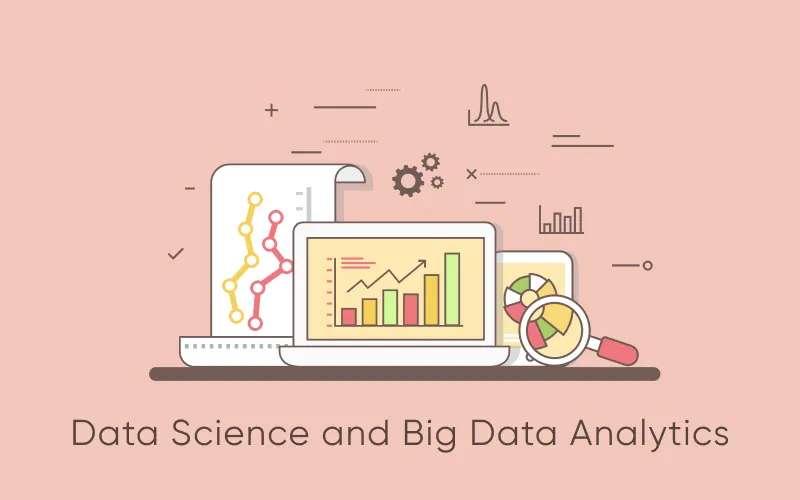
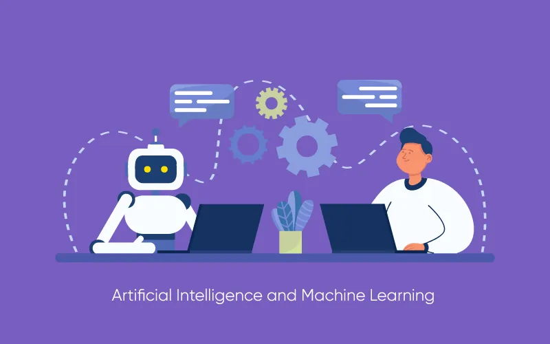

In today's constantly changing digital environment, staying ahead means keeping a finger on the pulse of top technology trends in 2024 and beyond. The tech domain is a whirlwind of innovation, from groundbreaking AI and ML advancements to the transformative potential of blockchain and IoT. Technological advancement continues to shape how we live and work, influencing various industries and sectors. Picture a world where self-driving cars roam bustling streets, virtual reality blurs the lines of reality, and sustainability meets tech in inspiring ways.
Here, we’ll explore cutting-edge technological developments, shedding light on the best tech trends in 2024 and reshaping our digital landscape. From artificial intelligence and blockchain to augmented reality and cybersecurity, we delve into the key innovations driving change and shaping the future of digital transformation.
1. Generative AI
Generative AI, a leading technology trend in 2024, involves models that create new content based on training data, such as text, images, and audio. It is revolutionizing fields like natural language processing, art, music, and healthcare by enabling human-like text generation of original artworks and accelerating drug discovery. Generative AI also powers personalized marketing, custom education, and immersive virtual experiences while raising ethical concerns around bias and misinformation. Its applications in automation enhance efficiency across industries, and its development requires interdisciplinary collaboration, making Generative AI a transformative force in technology and innovation.
2. Robotic Process Automation (RPA)
Robotic Process Automation (RPA) is a transformative trend in streamlining and automating repetitive tasks within businesses. It involves using software robots or "bots" to emulate human actions, interact with digital systems, and execute functions across various applications. RPA significantly reduces manual efforts, enhances accuracy, and accelerates processes in the finance, human resources, and customer service sectors. It allows organizations to focus on higher-value tasks, improves operational efficiency, and enables seamless integration between legacy systems & modern applications. As RPA advances, it's becoming integral to digital transformation strategies, offering businesses increased productivity and cost savings.
3. Data Science and Big Data Analytics
Data Science and Big Data Analytics are reshaping industries by harnessing vast amounts of data. Using cutting-edge tools like AI and machine learning, businesses extract crucial insights. This data-driven approach enhances decision-making, boosts efficiency, and fuels innovation across sectors. As organizations increasingly invest in these technologies, the ability to derive actionable intelligence from data becomes a key driver of success in the modern business landscape.
4. Digital Twin Technology
It is one of the top technology trends in 2024. Digital Twin Technology creates a virtual replica of physical objects, systems, or processes, capturing real-time data via IoT sensors for continuous feedback. This technology enhances the digital world by enabling predictive maintenance, real-time monitoring, and optimized performance. It facilitates better decision-making, lifecycle management, and process optimization. Digital twins drive innovation and new business models across various industries, including manufacturing, healthcare, and smart cities, by simulating scenarios and improving operational efficiency. Moreover, by bridging the physical and digital realms, digital twin technology offers unparalleled opportunities for enhanced monitoring, optimization, and personalized experiences.
5. Quantum Computing
Quantum computing, rooted in quantum mechanics, introduces a revolutionary approach to computation. It promises unparalleled computational power by simultaneously utilizing quantum bits (qubits) in multiple states. Advancements in this field are poised to transform industries, from drug discovery to cryptography, by solving complex problems at an unprecedented speed.
6. Artificial Intelligence and Machine Learning
The current trends in information technology 2024 are AI & ML services. The advancements continue to redefine various industries, transforming how businesses operate and enhancing our daily lives. These technologies are experiencing remarkable progress & shaping a future where intelligent systems play pivotal roles in decision-making, automation, and problem-solving.
7. Edge Computing
Edge computing decentralizes computing and storage closer to data sources like IoT devices. It helps reduce latency for real-time processing in applications such as autonomous vehicles and smart cities. Benefits include enhanced data security, privacy, and cost-effectiveness, but challenges remain in managing distributed networks of edge devices. Nevertheless, it signifies a pivotal shift, enabling efficiency and innovation in various industries.
8. 5G Technology
One of the top technology trends 2024 is 5G, a transformative force revolutionizing connectivity. Offering unprecedented speeds, remarkably reduced latency, and enhanced network reliability, 5G is reshaping the way we interact with technology. Its deployment across various industries, such as software development, healthcare, manufacturing, entertainment, and transportation, unlocks a new realm of possibilities. As 5G expands worldwide, it opens new frontiers in innovation. It helps envision a future of instant, reliable connectivity that transforms how we live, work, and communicate.
9. Blockchain Technology
Blockchain, a decentralized and secure ledger system, extends beyond cryptocurrencies, finding use in industries like healthcare and finance. Its tamper-resistant nature ensures data integrity and trust among users. Ongoing advancements promise innovations in digital identity, DeFi, NFTs, and sustainability. With scalability improvements, blockchain technology stands poised to revolutionize sectors and drive a more secure, decentralized future.
10. AI in Cybersecurity
Cybersecurity is rapidly evolving with proactive measures like AI-driven solutions and zero-trust architecture. AI enhances threat detection, while zero-trust models enforce strict access controls. Biometric authentication adds another layer of security, minimizing unauthorized access. With rising trends in cybersecurity focuses on preemptive strategies and multi-layered defenses to safeguard data and systems.
11. AR/VR
The top technology trends in 2024 combine AR/VR technologies. These are at the forefront of immersive technology, offering groundbreaking experiences in various domains. AR overlays digital information in the real world, enhancing everyday activities like gaming, education, and retail. It enables users to interact with virtual elements in their physical environment, creating new possibilities for learning, visualization, and entertainment. On the other hand, VR immerses users in entirely virtual environments, transporting them to simulated worlds for gaming, training, therapy, and more. With advancements in hardware and software, AR and VR are becoming more accessible, driving innovation across industries.
12. Internet of Things (IoT)
IoT continues to surge as a pivotal tech trend, interconnecting various devices and systems to enhance efficiency & convenience across multiple domains. The essence of IoT services lies in their ability to enable devices to communicate and exchange data, allowing for seamless integration and automation. IoT facilitates the creation of interconnected ecosystems, from smart homes and cities to industrial applications and healthcare. It helps streamline operations, optimize resource usage, and improve decision-making through real-time data analysis. The ongoing advancements in IoT technology promise even greater connectivity, efficiency, and innovation.
13. Cloud Computing
Cloud computing services- the current technology trends in 2024. It dominates the technological landscape; its latest trend focuses on serverless computing. This evolution eliminates the need for managing infrastructure, allowing developers to focus solely on writing and deploying code. Serverless computing operates on a pay-as-you-go model, offering scalability and cost-efficiency by charging only for the resources used. Moreover, it enables faster development cycles, enhances agility, and supports the creation of microservices-based architectures. This trend signifies a shift toward more streamlined and efficient software development & deployment processes within the cloud environment.
14. Natural Language Processing (NLP)
NLP, or Natural Language Processing, revolutionizes how computers understand and use human language. It powers chatbots, translation tools, and voice recognition systems, enabling more natural interactions between humans and machines. Using advanced algorithms, NLP continues to evolve, enhancing language comprehension and enabling innovative applications across various fields. Sustainable Technology Sustainable technology transforms our world by focusing on renewable energy, reducing carbon footprints, and promoting environmental sustainability. Solar, wind, and hydropower innovations make renewable energy more efficient and accessible. Energy-efficient appliances and electric vehicles help minimize emissions, while smart home technologies optimize energy use. The circular economy, sustainable agriculture, and water conservation practices are vital for resource management and reducing waste.
15. Metaverse
The metaverse- top technology trends in 2024. A fusion of virtual and physical realities promises to revolutionize digital interaction. Combining virtual and augmented realities, blockchain, AI, and customizable avatars creates immersive environments where users can socialize, work, and play. Virtual economies thrive on cryptocurrencies and NFTs, while platforms like Roblox and Horizon Workrooms offer glimpses into this future. As tech giants like Meta (formerly Facebook), Google, and Apple invest heavily, the metaverse could transform our lives, making interactions more engaging and interconnected. However, ethical considerations remain crucial for responsible innovation.